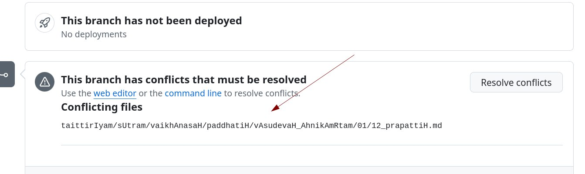
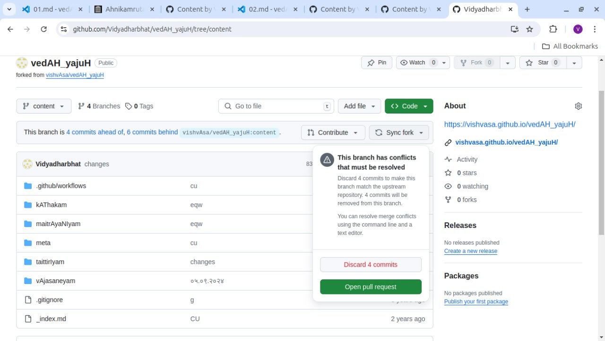
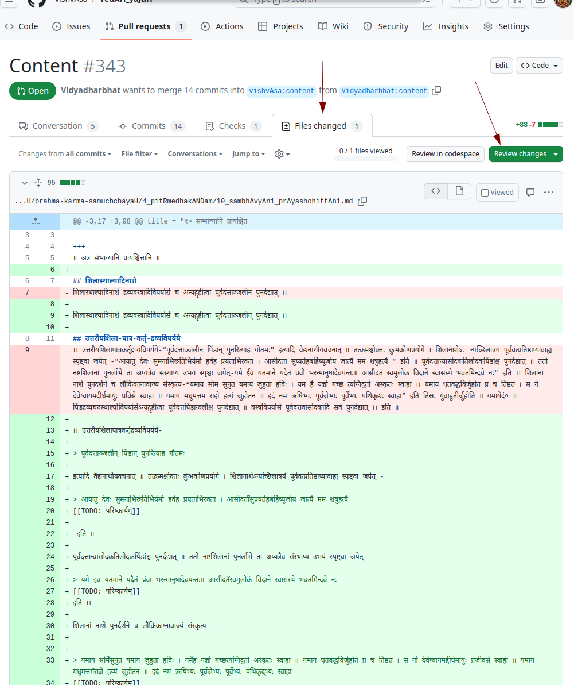
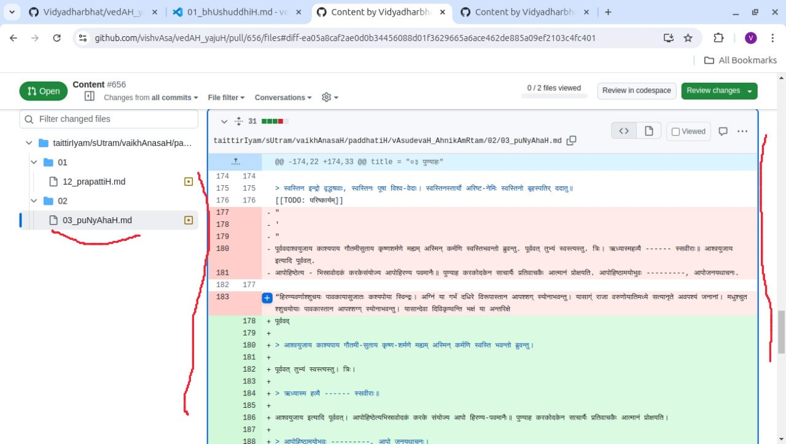

निर्देश-समीक्रिया (द्रष्टुं नोद्यम्)
- अधः XYZ इति यद् अस्ति, तस्य स्थाने स्वीयं github-नाम प्रयुङ्क्ताम्।
- अथवैतत् प्रयुज्यतां यन्त्रम्:
- Back to Git workflow
समस्याभिज्ञानम्
भवद्-आकर्षणाभ्यर्थने कदाचिद् एवं दृश्येत -

अथवा कदाचिद् sync fork इति नुदितय् एवं दृश्येत -

अस्यार्थः - मत्-प्रति–भवत्-प्रेषित-प्रत्योर् विवादे सति भवत्-परिष्करणान्य् अन्यानि यन्त्रेण तिरक्रियन्ते।
अत इयं समस्या मानुषप्रयासेण परिहरणीया।
परिहारः
तथा सति, सावधानं क्रमश एवं कार्यम् -
- कासु सञ्चिकासु परिवर्तनं कृतम् इति विजानातु। तदर्थम्
- आकर्षणाभ्यर्थनम् उद्घाटयेत् (“आकर्षणाभ्यर्थन-प्राप्तिः” इति वीक्षताम् अत्र)।
- अस्मिन् चित्रे दर्शितया रीत्या “Files changed” इति नुदतु।

- तत्र परिवर्तितास् सञ्चिकास् स्फुटास् स्युः।

- तासु >>> === <<< इत्यादि-चिह्नैर् आरभमानाः पङ्क्तयो दृश्यन्ते चेत्
तन्-मन्ध्यवर्तिनः पङ्क्तयः सर्वा अपि सावधानम् परीक्षणीयाः।
- भवत्-कृत-परिवर्तनानि स्वसङ्गणके क्वचिद् रक्षतु। (Warning! - some editors strip final spaces. Ensure that doesn’t happen.)
- browser मध्ये vscode इत्य् उद्घाटितं चेत्, तद् पिदधातु।
- “sync fork” इति कृत्वा “discard commits” इति कीलकं नुदतु। तेनान्यैः कृतानि परिवर्तनानि लभिष्यन्ते। (अनेन साकम् प्राचीनाकर्षणाभ्यर्थने सति, पिहितम् भवति। )
- पुनः vscode-गवाक्षम् पुनर् उद्घाटयतु।
- यथास्थानं पाठशोधने ऽनुवर्तताम् (यथापेक्षं पूर्वं स्वसङ्गणके रक्षितानि परिवर्तनानि प्रयुज्य)।
- ततः नूतनम् आकर्षणाभ्यर्थनम् प्रेषयतु।